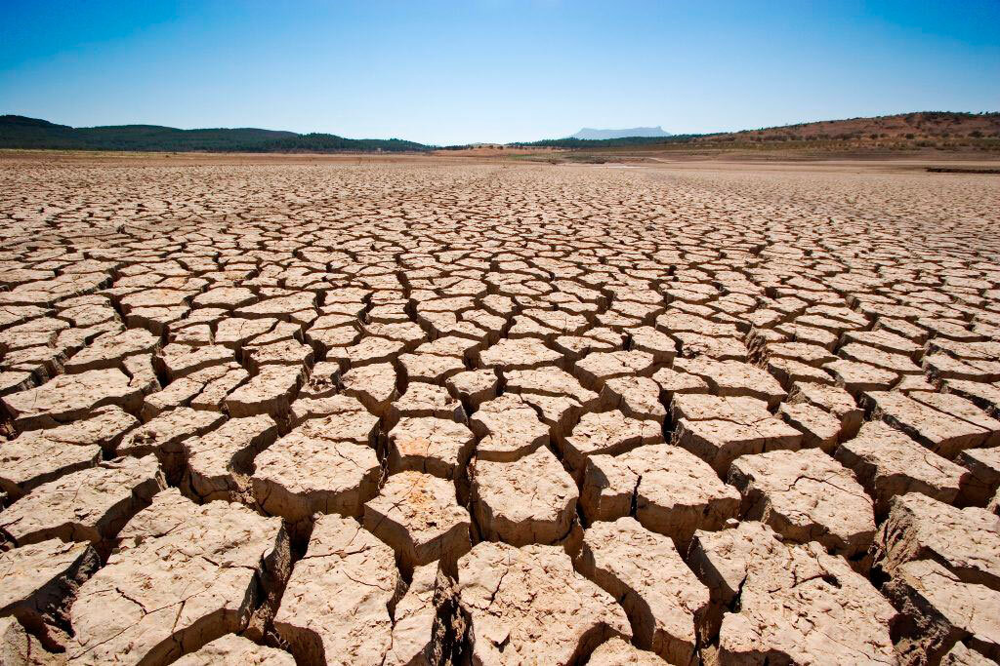

¿De qué trata este objetivo?
Sus metas principales son la gestión sostenible de los bosques, la lucha contra la desertificación, detener la degradación de tierras y pérdida de biodiversidad. Se buscará promover también el uso sostenible de estos ecosistemas. España es un país de gran riqueza natural, con una amplia diversidad de ambientes y zonas de escasa población, por lo tanto la correcta gestión de su patrimonio natural es un reto de gran importancia. La agenda 2030 le concederá especial atención a los bosques y zonas montañosas, que son de gran extensión en el territorio español. Estos constituyen un elemento fundamental en el desarrollo económico y social, la protección del medio ambiente y el mantenimiento de servicios del ecosistema, con mayor incidencia en las zonas rurales. El éxodo de la población rural a las ciudades genera nuevos desafíos en unas superficies que siempre habían sido intensamente gestionadas por su población para la obtención de recursos naturales y alimentos, y que han pasado a estar abandonadas, relegándolas a la inestabilidad y a diversos riesgos que podrían perjudicar su diversidad. Todo esto se traduce en una mayor sensibilidad de los terrenos forestales a los incendios, plagas y enfermedades. Otros problemas ambientales globales como la desertificación y el cambio climático ejercen una presión adicional sobre los recursos naturales y la biodiversidad terrestre. Es prioritaria la investigación destinada a mejorar la comprensión y funcionamiento de los ecosistemas, su interacción con los sistemas socio-económicos y el análisis de problemas emergentes, como la adaptación de las especies y ecosistemas al cambio climático o la adaptación de especies invasoras.
